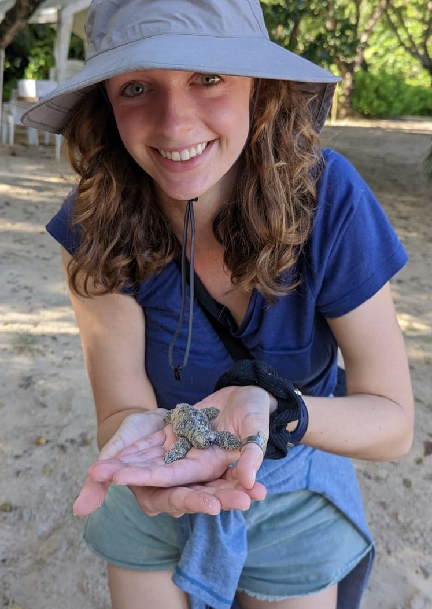

Claire M. Williams
Postdoctoral Researcher
Georgia Institute of Technology
Texas A&M University
My research examines how coral species and communities respond to environmental and human-driven change across space and time. I combine modern reef monitoring, fossil reefs, coral traits, and ecological models to understand how reefs change, from individual reefs to global patterns and from months to millennia.
My goal is to anticipate coral vulnerability and help identify what, where, and when conservation action is needed. I work with local partners to develop research questions and share findings directly with sanctuary managers to inform conservation decisions.

Connecting reef histories with conservation today
Modern reef monitoring
Tracking how reef communities respond to protection, disturbance, and changing coastal conditions.
Fossil reef baselines
Using ancient reefs to understand the extent of ecological change beyond modern observations.
Forecasting vulnerability
Integrating fossils, coral traits, and models to anticipate future reef habitats, communities, and ecological functions.